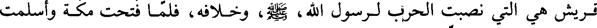
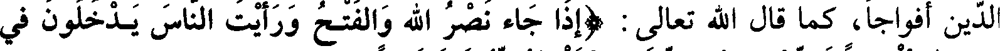
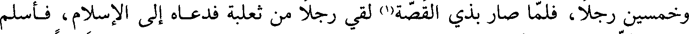
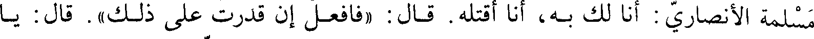

File: 000060.gt.txt (if the image is defective, simply delete all Arabic text and the line will be excluded)
الثالثة(1) ليفيضن المال، حتى لا يقبله أحد(2) .
File: 000061.gt.txt (if the image is defective, simply delete all Arabic text and the line will be excluded)

ذكر قدوم الوفود على رسول الله صعلم(3)
File: 000062.gt.txt (if the image is defective, simply delete all Arabic text and the line will be excluded)

لما افتتح رسول الله ، صلعم، مكة وأسلمت ثقيف وفرغ من تبوك ضربت إليه وفود
File: 000063.gt.txt (if the image is defective, simply delete all Arabic text and the line will be excluded)

العرب من كل وجه، وانما كانت العرب تنتظر باسلامها قريشا، اذ كانوا امام الناس واهل
File: 000064.gt.txt (if the image is defective, simply delete all Arabic text and the line will be excluded)

الحرم، و صريح ولد اسماعيل بن ابراهيم عليه السلام، لا تنكر العرب ذلك العرب ذلك، وكانت
File: 000065.gt.txt (if the image is defective, simply delete all Arabic text and the line will be excluded)

قريش هي التي نصبت الحرب لرسول الله، صعلم، وخلافه، فلما فتحت مكة وأسلمت
File: 000066.gt.txt (if the image is defective, simply delete all Arabic text and the line will be excluded)
قريش عرفت العرب أنها لا طاقة لها بحرب رسول الله، صعلم، ولا عداوته، فدخلوا في
File: 000067.gt.txt (if the image is defective, simply delete all Arabic text and the line will be excluded)

الدين أفواجا، كما قال الله تعالى : ( إذا جاء نصر الله والفتح ورأيت الناس يدخلون في
File: 000068.gt.txt (if the image is defective, simply delete all Arabic text and the line will be excluded)
دين الله أفواجا فسبح بحمد ربك واستغفره إنه كان توابا)(4)
File: 000069.gt.txt (if the image is defective, simply delete all Arabic text and the line will be excluded)
ودخلت السنة الثالثة من الهجرة
File: 000070.gt.txt (if the image is defective, simply delete all Arabic text and the line will be excluded)

في المحرم سنة ثلاث سمع رسول الله، صعلم، أن جمعا من بني ثعلبة بن سعد بن
File: 000071.gt.txt (if the image is defective, simply delete all Arabic text and the line will be excluded)
ذبيان، وبني محارب بن حفص، تجمعوا ليصيبوا من المسلمين، فسار إليهم في أربعمائة
File: 000072.gt.txt (if the image is defective, simply delete all Arabic text and the line will be excluded)

وخمسين رجلا، فلما صار بذي القصة(1) لقي رجلا من ثعلبة فدعاه إلى الإسلام، فأسلم
File: 000073.gt.txt (if the image is defective, simply delete all Arabic text and the line will be excluded)
وأخبره أن المشركين أتاهم خبره فهربوا إلى رؤوس الجبال، فعاد ولم يلق كيدا، وكان
File: 000074.gt.txt (if the image is defective, simply delete all Arabic text and the line will be excluded)

مقامه اثنتي عشرة ليلة(2) .
File: 000075.gt.txt (if the image is defective, simply delete all Arabic text and the line will be excluded)
وفيها، في جمادى الأولى، غزا بني سليم ببحران، وسبب هذه الغزوة أن جمعا من
File: 000076.gt.txt (if the image is defective, simply delete all Arabic text and the line will be excluded)

بني سليم تجمعوا ببحران من ناحية الفرع، فبلغ ذلك النبي، صعلم، فسار إليهم في
File: 000077.gt.txt (if the image is defective, simply delete all Arabic text and the line will be excluded)

ليال ، واستخلف على المدينة ابن أم مكتوم(3).
File: 000078.gt.txt (if the image is defective, simply delete all Arabic text and the line will be excluded)

(القصة : بفتح القاف، والصاد المهملة . وبحران : بالباء الموحدة، والحاء المهملة
File: 000079.gt.txt (if the image is defective, simply delete all Arabic text and the line will be excluded)

ذكر قتل كعب بن الأشرف اليهودي(4)
File: 000080.gt.txt (if the image is defective, simply delete all Arabic text and the line will be excluded)
الساكنة) .
File: 000081.gt.txt (if the image is defective, simply delete all Arabic text and the line will be excluded)
وفي هذه السنة قتل كعب بن الأشرف، وهو أحد بني نبهان من طيء، وكانت أمه
File: 000082.gt.txt (if the image is defective, simply delete all Arabic text and the line will be excluded)
من بني النضير، وكان قد كبر عليه قتل من قتل ببدر من قريش، فسار إلى مكة وحرض
File: 000083.gt.txt (if the image is defective, simply delete all Arabic text and the line will be excluded)

على رسول الله، صعلم، وبكى أصحاب بدر، وكان يشبب بنساء المسلمين حتى آذاهم،
File: 000084.gt.txt (if the image is defective, simply delete all Arabic text and the line will be excluded)

فلما عاد إلى المدينة قال رسول الله ، صعلم : (من لي بابن الأشرف)؟ فقال محمد بن
File: 000085.gt.txt (if the image is defective, simply delete all Arabic text and the line will be excluded)

مسلمة الأنصاري : أنا لك به، أنا أقتله. قال: (فافعل إن قدرت على ذلك) . قال: يا
File: 000086.gt.txt (if the image is defective, simply delete all Arabic text and the line will be excluded)

رسول الله لا بد لنا ما نقول. قال: ( قولوا ما بدا لكم، فأنتم في حل من ذلك).
File: 000087.gt.txt (if the image is defective, simply delete all Arabic text and the line will be excluded)
فاجتمع محمد بن مسلمة، وسلكان بن سلامة بن وقش، وهو أبو نائلة، والحارث
File: 000088.gt.txt (if the image is defective, simply delete all Arabic text and the line will be excluded)

بن أوس بن معاذ، وكان أخا كعب من الرضاعة، وعباد بن بشر، وأبو عبس بن جبر(1)، ثم
File: 000089.gt.txt (if the image is defective, simply delete all Arabic text and the line will be excluded)

قدموا إلى ابن الأشرف أبا نائلة، فتحدث معه ثم قال له: يا ابن الأشرف إني قد جئتك
To Save: `Ctrl+s`, make sure to choose `Webpage, complete`!